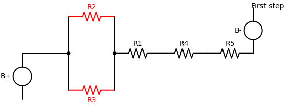
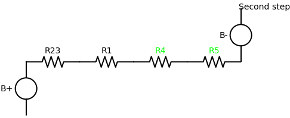
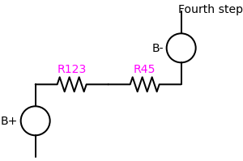
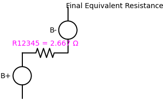

Problem 1:
Equivalent Resistance Using Graph Theory: Circuit Simplification: Visualizing Equivalent Resistance
Goal
To demonstrate how the equivalent resistance of a circuit evolves as we remove one resistor at a time, while adjusting values of remaining resistors to preserve or compare \(R_{\text{eq}}\).
Initial Circuit
We consider a resistor network with the following values:
- \(R_2 = 4\,\Omega\)
- \(R_3 = 6\,\Omega\)
- \(R_1 = 0.267\,\Omega\)
- \(R_4 = 1.2\,\Omega\)
- \(R_5 = 1.2\,\Omega\)
The schematic structure is:
┌──── R2 = 4Ω ────┐
A ── R1 ┤ ├── R4 ── R5 ── B
└──── R3 = 6Ω ────┘
Step-by-Step Simplification
Step 1: Parallel Combination \(R_{23}\)
We start by simplifying \(R_2\) and \(R_3\) in parallel:
Step 2: Combine \(R_4\) and \(R_5\)
These are in series:
Step 3: Combine \(R_{23}\) and \(R_{45}\) in Parallel
Now we combine those two parallel branches:
Step 4: Add \(R_1\) in Series
Finally:
Final equivalent resistance:
\(R_{\text{eq}} = 2.667 \Omega\)
Insight
This process shows how different resistor configurations — even when visually complex — can be systematically reduced using basic parallel and series rules. This is a core principle in graph-based circuit analysis, which allows us to simplify, analyze, and redesign circuits efficiently.
Visual Circuit Steps





Python implementations are in Collab